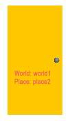

3.17.2 Funcionament del Link
El link apareix en l'entorn 3D representat per el seg�ent objecte:

Per tal d'utilitzar el link sols haurem de clicar sobre aquesta informaci� i tot seguit veurem con l'entorn 3D passa a ser ara el del nou Place.